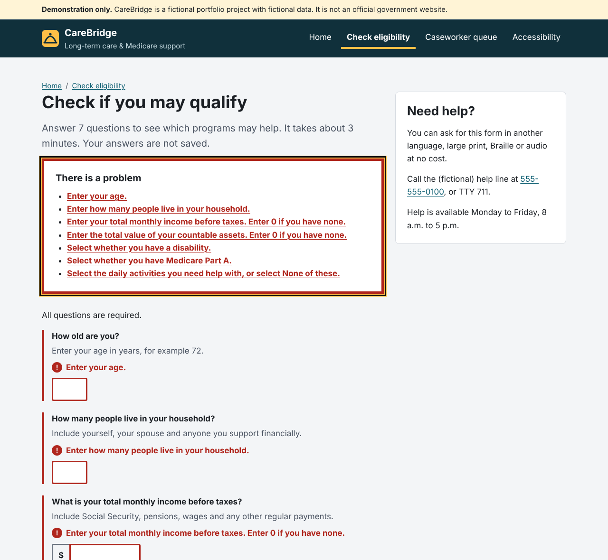

Senior .NET Full Stack Developer · WCAG 2.1 AA
Accessible public-benefits software, from the SQL table to the screen reader.
I'm Charan Reddy. I have 8+ years of experience building C# / ASP.NET Core services and Angular and React front ends. I currently work on a Medicaid and Medicare long-term care platform for a city social services agency.
Email: charanreddythambireddy@gmail.com LinkedIn profile

Featured project
CareBridge: long-term care and Medicare support portal
An independent sample built for this application. The public side is a plain-language eligibility screener for Medicaid long-term care, home and community-based services, and the Medicare Savings Program. The staff side is a caseworker queue and a case page for approving or denying service authorizations. All data is fictional.
Try it yourself: three tasks, about five minutes
Each task opens a page of the live demo.
-
Make a mistake on the form
- Select Check eligibility without answering.
- Focus jumps to the error summary and the page title starts with "Error:".
- Select an error link: focus goes to that field, with its label in view.
-
Work the queue by keyboard
- Press Tab to a column heading and Enter to sort it.
- A screen reader hears the column state through
aria-sortand the new result count. - Filters apply only when you press Apply filters.
-
Decide a service authorization
- Use ← → to switch tabs, then choose Decide.
- Choose Deny with no reason to see validation inside the dialog.
- Esc returns focus to the button that opened it.


Accessibility evidence
Tested with tools, keyboard and assistive-technology patterns
The project targets WCAG 2.1 AA and Section 508. Automated checks run in the CI pipeline and fail the build on any violation. The full criteria mapping and manual JAWS/NVDA test script are in the repository's ACCESSIBILITY.md.
Automated results
- 0 axe-core violations across 13 page states, including form errors, the open dialog and a 320px viewport.
- 12 of 12 Playwright tests passing: skip links, focus order, tabs, the dialog, live-region announcements and reflow.
- Every color token contrast-checked. The lowest text pairing is 5.7:1.
Selected success criteria
- 1.4.10Reflow at 320px
- 2.4.3Focus order in forms and dialogs
- 2.4.7Two-tone visible focus ring
- 3.3.1Error summary plus inline errors
- 4.1.2ARIA tabs and aria-sort
- 4.1.3Live-region status messages
| Use | Sample | Colors | Ratio | Level |
|---|---|---|---|---|
| Body text | Aa | #1b1f24 on #ffffff | 16.6:1 | AAA |
| Primary / links | Aa | #0a5c70 on #ffffff | 7.6:1 | AAA |
| Muted text | Aa | #4a5361 on #f3f5f7 | 7.1:1 | AAA |
| Error | Aa | #b0261d on #fdeceb | 5.9:1 | AA |
| Success | Aa | #1d6b3c on #e5f3ea | 5.7:1 | AA |
| Warning | Aa | #7a4f00 on #fff4d6 | 6.5:1 | AA |
| Header text | Aa | #ffffff on #10303b | 13.9:1 | AAA |
| Input border | Aa | #6b7480 on #ffffff | 4.7:1 | AA, 3:1 for UI |
Code samples
Excerpts from the repository
These are unedited extracts. The full solution has an ASP.NET Core 8 API, EF Core, xUnit and WebApplicationFactory tests, a Sass design system, SQL Server scripts, and GitHub Actions and Azure DevOps pipelines. Browse all of it on GitHub.
public async Task<DecisionOutcome> DecideAuthorizationAsync(
int caseId, int authorizationId, AuthorizationDecisionRequest request, CancellationToken ct)
{
var auth = await _db.ServiceAuthorizations
.SingleOrDefaultAsync(a => a.Id == authorizationId && a.CaseRecordId == caseId, ct);
if (auth is null)
{
return new DecisionOutcome(DecisionResultKind.NotFound);
}
if (auth.Status != AuthorizationStatus.Pending)
{
return new DecisionOutcome(DecisionResultKind.AlreadyDecided, ToDto(auth));
}
auth.Status = request.Decision!.Value;
auth.DecisionReason = string.IsNullOrWhiteSpace(request.Reason) ? null : request.Reason.Trim();
auth.DecidedBy = _user.UserName;
auth.DecidedUtc = _clock.GetUtcNow().UtcDateTime;
// Never write PII into audit details; reference records by ID only.
_audit.Record(
action: $"Authorization{auth.Status}",
entityType: nameof(ServiceAuthorization),
entityId: auth.Id.ToString(System.Globalization.CultureInfo.InvariantCulture),
details: $"Case {caseId}; service {auth.ServiceCode}");
await _db.SaveChangesAsync(ct);
return new DecisionOutcome(DecisionResultKind.Success, ToDto(auth));
}export function showErrors(form, summary, errors) {
clearErrors(form, summary);
if (!errors.length) {
return;
}
const list = summary.querySelector("ul");
for (const { field, message } of errors) {
const control = form.querySelector(`#${CSS.escape(field)}`);
if (!control) {
continue;
}
const group = control.closest(".bcn-form-group");
const owner = describedElementFor(control);
const messageEl = group?.querySelector(".bcn-error-message");
group?.classList.add("bcn-form-group--error");
// Mark every control in a radio/checkbox group invalid, not just the first.
const controls = owner.tagName === "FIELDSET" ? owner.querySelectorAll("input") : [control];
controls.forEach((c) => c.setAttribute("aria-invalid", "true"));
if (messageEl) {
messageEl.querySelector("[data-error-text]").textContent = message;
messageEl.hidden = false;
addToken(owner, "aria-describedby", messageEl.id);
}
const item = document.createElement("li");
const link = document.createElement("a");
link.href = `#${field}`;
link.textContent = message;
link.addEventListener("click", (event) => {
// Default anchor behaviour scrolls but does not reliably focus form controls, and it
// hides the label/legend above the input. Focus the control and scroll its label into view.
event.preventDefault();
const label = owner.tagName === "FIELDSET"
? owner.querySelector("legend")
: form.querySelector(`label[for="${CSS.escape(field)}"]`);
(label || control).scrollIntoView({ block: "start" });
control.focus({ preventScroll: true });
});
item.append(link);
list.append(item);
}
if (!document.title.startsWith(ERROR_TITLE_PREFIX)) {
document.title = ERROR_TITLE_PREFIX + document.title;
}
summary.hidden = false;
summary.focus();
}tab.addEventListener("keydown", (event) => {
let next = null;
switch (event.key) {
case "ArrowRight":
next = (index + 1) % tabs.length;
break;
case "ArrowLeft":
next = (index - 1 + tabs.length) % tabs.length;
break;
case "Home":
next = 0;
break;
case "End":
next = tabs.length - 1;
break;
default:
return;
}
event.preventDefault();
select(next);
});// Two-tone focus indicator (WCAG 2.4.7 Focus Visible, 2.4.11/2.4.13 in WCAG 2.2):
// a dark outline plus a yellow halo stays visible on light, dark and brand backgrounds.
@mixin focus-ring {
outline: 3px solid var(--bcn-color-focus-ink);
outline-offset: 2px;
box-shadow: 0 0 0 6px var(--bcn-color-focus);
}
// Hides content visually while keeping it available to screen readers.
@mixin visually-hidden {
position: absolute !important;
width: 1px !important;
height: 1px !important;
margin: -1px !important;
padding: 0 !important;
overflow: hidden !important;
clip: rect(0 0 0 0) !important;
clip-path: inset(50%) !important;
white-space: nowrap !important;
border: 0 !important;
}CREATE OR ALTER PROCEDURE dbo.usp_DecideServiceAuthorization
@CaseRecordId INT,
@AuthorizationId INT,
@Decision NVARCHAR(20),
@Reason NVARCHAR(500) = NULL,
@Actor NVARCHAR(120),
@CorrelationId NVARCHAR(64) = NULL
AS
BEGIN
SET NOCOUNT ON;
SET XACT_ABORT ON;
IF @Decision NOT IN (N'Approved', N'Denied')
THROW 50001, N'Decision must be Approved or Denied.', 1;
IF @Decision = N'Denied' AND NULLIF(LTRIM(RTRIM(@Reason)), N'') IS NULL
THROW 50002, N'A denial requires a reason.', 1;
BEGIN TRANSACTION;
DECLARE @Current NVARCHAR(20);
SELECT @Current = Status
FROM dbo.ServiceAuthorization WITH (UPDLOCK, HOLDLOCK) -- serialize concurrent decisions
WHERE Id = @AuthorizationId AND CaseRecordId = @CaseRecordId;
IF @Current IS NULL BEGIN ROLLBACK; RETURN 1; END;
IF @Current <> N'Pending' BEGIN ROLLBACK; RETURN 2; END;
UPDATE dbo.ServiceAuthorization
SET Status = @Decision,
DecisionReason = NULLIF(LTRIM(RTRIM(@Reason)), N''),
DecidedBy = @Actor,
DecidedUtc = SYSUTCDATETIME()
WHERE Id = @AuthorizationId;
INSERT dbo.AuditEntry (TimestampUtc, Actor, Action, EntityType, EntityId, Details, CorrelationId)
VALUES (SYSUTCDATETIME(), @Actor, N'Authorization' + @Decision, N'ServiceAuthorization',
CAST(@AuthorizationId AS NVARCHAR(40)), N'Case ' + CAST(@CaseRecordId AS NVARCHAR(20)), @CorrelationId);
COMMIT;
RETURN 0;
END;test("decision dialog manages focus, validates, and returns focus", async ({ page }) => {
await page.goto("/case.html?id=5#tab-authorizations");
const decide = page.getByRole("button", { name: /^Decide on / }).first();
await decide.click();
const dialog = page.getByRole("dialog", { name: "Decide service authorization" });
await expect(dialog).toBeVisible();
await expect(page.locator("#decision-approve")).toBeFocused();
await page.getByLabel("Deny", { exact: true }).check();
await dialog.getByRole("button", { name: "Submit decision" }).click();
await expect(page.locator("#decision-error-summary")).toBeFocused();
await expectNoViolations(page, "decision dialog error state");
await page.keyboard.press("Escape");
await expect(dialog).toBeHidden();
await expect(decide).toBeFocused();
await decide.click();
await page.getByLabel("Approve", { exact: true }).check();
await dialog.getByRole("button", { name: "Submit decision" }).click();
await expect(page.locator("#decision-notice")).toBeFocused();
await expect(page.locator("#decision-notice")).toContainText("was approved");
});Role fit
How the work maps to the role's weighting
Senior Full Stack .NET Developer (SDP6): .NET and front-end focus, with accessibility as a core requirement across all of it.
.NET and C#
About 40% of the role
- ASP.NET Core 8 Web API with layered services, DTOs, the Options pattern and ProblemDetails errors
- EF Core with SQL Server or an in-memory provider; WebApplicationFactory integration tests
- At work: .NET 6/8 microservices for eligibility, case management and service authorization
Front end, UI and UX
About 40% of the role
- Semantic HTML5, Sass design system with tokens and BEM components, ES-module JavaScript
- Plain-language content, error prevention and responsive layouts down to 320px
- At work: accessible Angular and React modules on Bootstrap and Material
Middleware and APIs
About 10% of the role
- Correlation-ID and security-header middleware, a strict Content-Security-Policy
- PII encrypted with the ASP.NET Core Data Protection API; IDs masked in responses
SQL Server
About 10% of the role
- Schema with check constraints, covering indexes and an append-only audit table
- Paged, whitelist-sorted queue procedure and an aging report view
Experience
Recent roles
-
Senior Consultant · Department of Social Services, New York City
Dec 2025 – present
- Long-Term Care platform supporting Medicaid and Medicare service programs: enrollment, eligibility, case management and service authorization.
- Accessible React and Angular interfaces, with WCAG 2.1 AA remediation verified by automated checks and keyboard testing.
- .NET 6/8 microservices, Azure AD role-based access, Kafka/RabbitMQ events, SQL Server reporting, Azure DevOps CI/CD.
-
Software Engineer · Euromonitor International
Dec 2021 – Nov 2025
- Modernized ASP.NET Core services to .NET 6/8 and built Angular and React micro-UIs for enterprise analytics dashboards.
- Tested with axe DevTools and JAWS, and remediated keyboard, focus-management and screen-reader issues to WCAG 2.1 AA.
-
.NET Developer · Karnataka State Agricultural Department
Apr 2021 – Nov 2021
- Statewide schemes application using .NET Core, React and SQL Server, including beneficiary eligibility filtering across department APIs.
-
Software Developer · Blackwater Tech
May 2018 – Apr 2021
- ASP.NET MVC and Core applications with Angular Material and Bootstrap front ends.
Certifications and education
- Microsoft Azure Developer (AZ-204)
- Microsoft Azure Fundamentals (AZ-900)
- B.E., Anna University (Panimalar Engineering College)